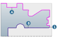
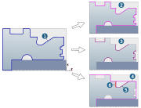

Turn Feature Recognition
Automatically recognize the rotation contour for machining a turned surface and save it as a Generic turning feature and/or Turning Groove. The turn features can be used in the job definition for the Rough Turning, Contour parallel Turning, Finish Turning cycles as well as theGroove Plunging and Groove Finishing cycles.
|
Frame: Select the frame for recognising the turn feature. |

Split position: If the main spindle and the counter spindle are to be used for machining, select a point on the Z axis of the coordinate system in order to split the machining for the two spindles.
Split position inside (1): Select a point on the Z axis of the coordinate system to decouple the two operations when machining with Outside profile (A) and Inside profile (B).
|  |
Selection
Tolerance: Fineness of the curve resolution for recognising the turn feature.
Curves / Surfaces: Define the option to select the CAD elements.
|
If a contour already exists as a CAD element, use the Curves option to select the required Turning profile in order to create a turning area. |
|
|
If there is no curve, use the Surfaces option to create the turning contour and the turning area. |


Note
If the contour is not closed, points are automatically set at the open positions so that the problem can be corrected manually.
If the contour is not closed, points are automatically set at the open positions so that the problem can be corrected manually.
Result
Create Turning Area: Activate if a new Turning area is to be created in the hyperMILL browser (Model tab).
Apply: Click Apply to create the features for turning operations.
Depending on the shape of the selected contour elements (1), the Generic turning feature (2) and Turning groove (3) features are created as elements in the feature browser.
In addition, the profiles for roughing operations (4) are created for the Generic turning feature and for the Turning groove feature the profiles for roughing operations (5) are also created along with possible undercut profiles (6).
|  |
Use the Create CAD curves function to save the created or recognized turning contour as a CAD contour element in the required color and the required layer.
Cancel: Close the dialog without recognising any turn features.